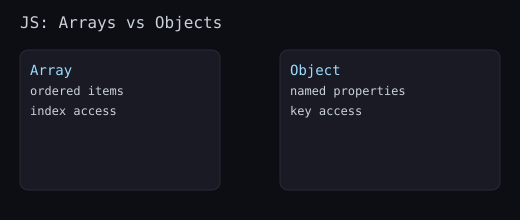

Arrays store ordered data; objects store named properties. Master destructuring, spread/rest, and immutable updates for maintainable code.

const user = { name: 'Ava', age: 21, address: { city: 'Lisbon' } };
const { name, age, address: { city } } = user;
const [first, second, ...rest] = [1,2,3,4];const next = { ...user, premium: true };
const clone = { ...user, address: { ...user.address } }; // shallow clone + nested clone
function sum(...nums){ return nums.reduce((a,b) => a+b, 0); }const state = { cart: [{ id: 1, qty: 1 }] };
// Update qty without mutation
const updated = {
...state,
cart: state.cart.map(it => it.id === 1 ? { ...it, qty: it.qty + 1 } : it)
};const items = [1,2,3,4]; items.map(x => x*2); items.filter(x => x%2===0); items.find(x => x>2); items.some(x => x===3); items.every(x => x>0); items.reduce((sum,x) => sum+x, 0);
const entries = Object.entries({ a:1, b:2 });
const back = Object.fromEntries(entries);
const keys = Object.keys(back);
const values = Object.values(back);JSON.parse(JSON.stringify(obj)) loses functions, Dates, undefined.structuredClone for supported environments.